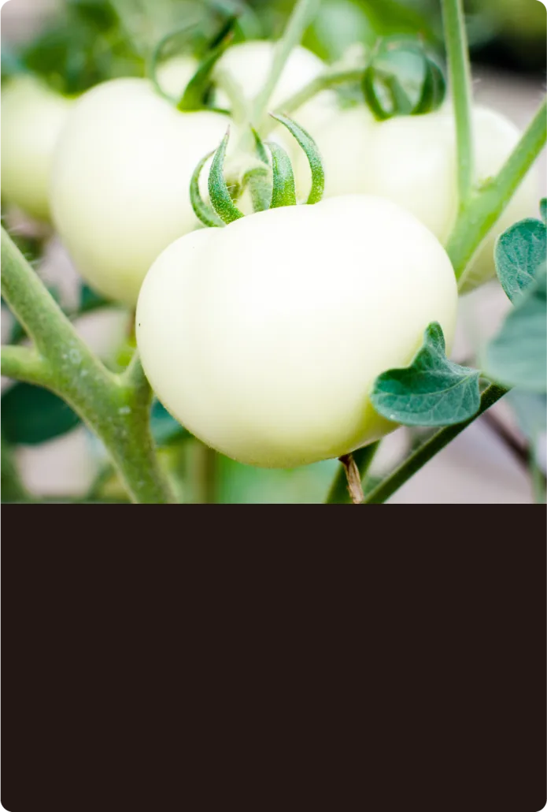
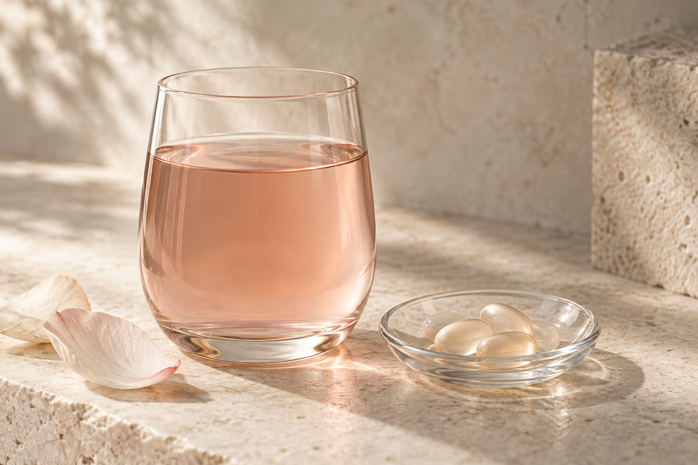
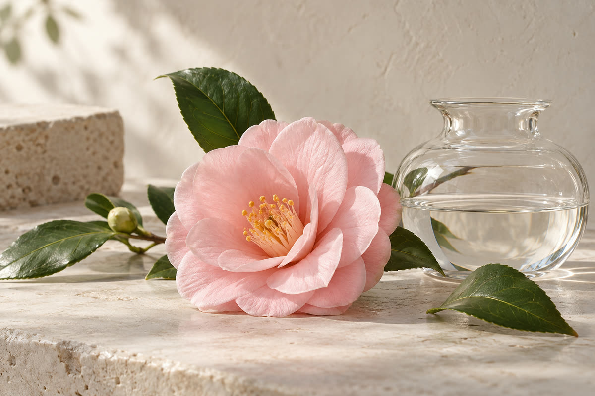
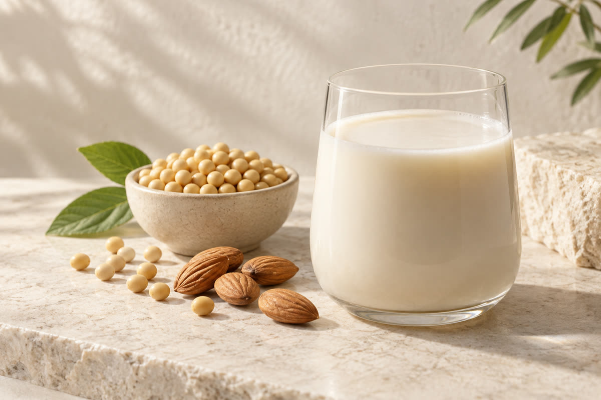
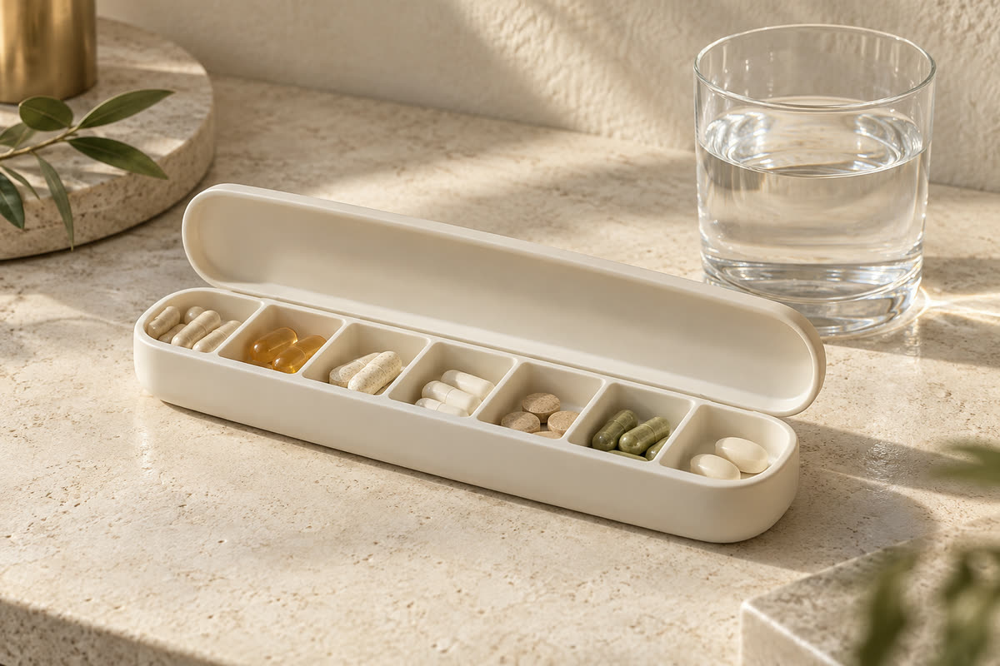
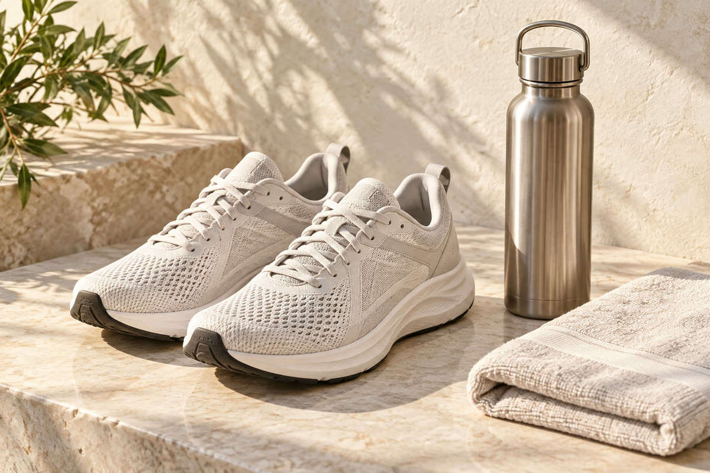
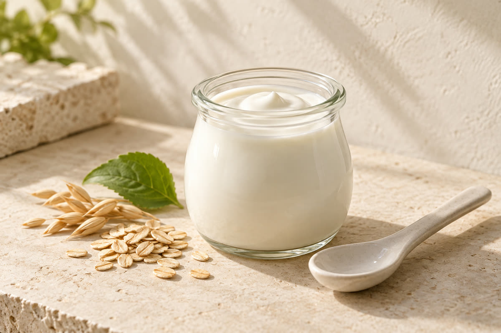
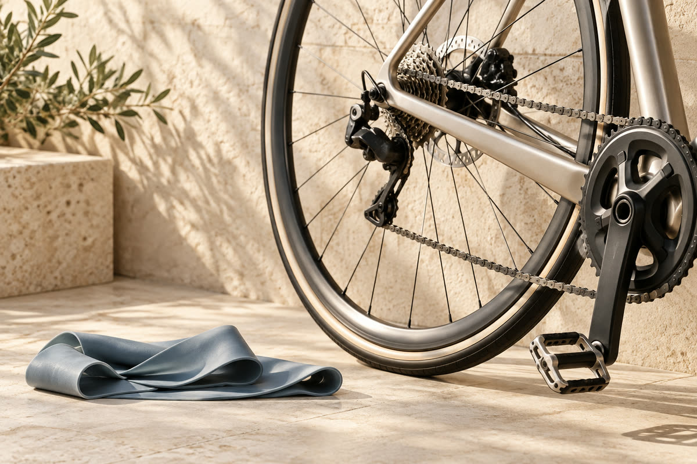
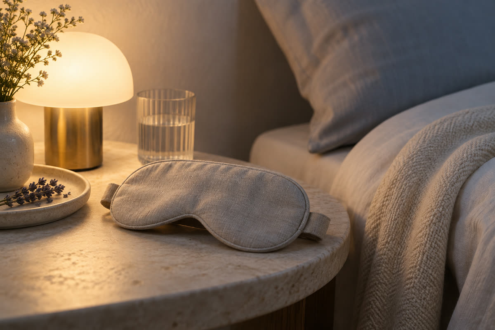

ICE CRYSTAL TOMATO
冰晶番茄
百達醫官網既有品項，果實原料。
形式果實原料

EXPLORE INGREDIENTS
選一張分類卡片，在下方查看對應原料。已有成分名稱，也可以直接搜尋。
版面預覽 原料品項與圖片沿用現有示意資料，待百達醫確認後更新。
11 個分類

SKIN MAINTENANCE養顏美容冰晶番茄・膠原蛋白胜肽7 項原料查看原料收合原料INGREDIENT SELECTION
ICE CRYSTAL TOMATO
百達醫官網既有品項，果實原料。
形式果實原料

COLLAGEN PEPTIDE
水解型小分子胜肽，常見來源為魚鱗或魚皮。
形式粉末｜水解
GLUTATHIONE
由酵母發酵取得的三肽成分。
形式粉末｜發酵
VITAMIN C
抗壞血酸，可選用一般型或緩釋型。
形式粉末｜結晶
CERAMIDE
常見自米糠或小麥萃取的醣脂質。
形式粉末｜植物萃取
HYALURONIC ACID
發酵法製得的多醣體，有不同分子量規格。
形式粉末｜發酵
RESVERATROL
多取自虎杖或葡萄皮的多酚類。
形式粉末｜植物萃取
有想使用的原料？提供名稱與預計劑型，與顧問一起確認規格。
討論這類原料
SECRET GARDEN秘密花園蔓越莓萃取・鼠李糖乳桿菌4 項原料查看原料收合原料INGREDIENT SELECTION
CRANBERRY
含原花青素（PACs）的果實萃取，規格以 PACs 含量標示。
形式粉末｜果實萃取
LACTOBACILLUS
常用於私密保健的菌株，以 CFU 標示活菌數。
形式粉末｜益生菌
ROSELLE
取自洛神花萼片的植物萃取。
形式粉末｜植物萃取
EVENING PRIMROSE
富含 GLA 的植物油脂，多以軟膠囊呈現。
形式油脂｜冷壓
有想使用的原料？提供名稱與預計劑型，與顧問一起確認規格。
討論這類原料 BOOST METABOLISM促進新陳代謝綠茶兒茶素・L-肉鹼5 項原料查看原料收合原料
BOOST METABOLISM促進新陳代謝綠茶兒茶素・L-肉鹼5 項原料查看原料收合原料INGREDIENT SELECTION
GREEN TEA
以 EGCG 含量標示規格的茶葉萃取。
形式粉末｜植物萃取
L-CARNITINE
常見為酒石酸鹽型式，水溶性佳。
形式粉末｜胺基酸衍生
GARCINIA
以 HCA 含量標示的果實萃取。
形式粉末｜果實萃取
CHROMIUM
以酵母為載體的微量礦物質。
形式粉末｜酵母
CAPSAICIN
取自辣椒果實，需注意風味與刺激性。
形式粉末｜植物萃取
有想使用的原料？提供名稱與預計劑型，與顧問一起確認規格。
討論這類原料
PROTEIN SUPPLEMENT蛋白補給乳清蛋白・大豆分離蛋白5 項原料查看原料收合原料INGREDIENT SELECTION
WHEY PROTEIN
乳製品來源，有濃縮與分離兩種規格。
形式粉末｜乳源
SOY PROTEIN
植物性蛋白，適用素食配方。
形式粉末｜植物
PEA PROTEIN
低致敏植物蛋白，風味需另行調整。
形式粉末｜植物
BCAA
白胺酸、異白胺酸與纈胺酸的組合。
形式粉末｜胺基酸
GLUTAMINE
游離型胺基酸，常見於運動配方。
形式粉末｜胺基酸
有想使用的原料？提供名稱與預計劑型，與顧問一起確認規格。
討論這類原料
SUPPORT BODY FUNCTIONS調節生理機能維生素 B 群・鋅酵母4 項原料查看原料收合原料INGREDIENT SELECTION
VITAMIN B COMPLEX
涵蓋 B1、B2、B6、B12 與菸鹼醯胺等。
形式粉末｜複方
ZINC YEAST
以酵母為載體的微量礦物質。
形式粉末｜酵母
COENZYME Q10
有一般型與還原型（泛醇）兩種規格。
形式粉末／油脂
TAURINE
游離型含硫胺基酸，水溶性佳。
形式粉末｜胺基酸
有想使用的原料？提供名稱與預計劑型，與顧問一起確認規格。
討論這類原料
HIGHLY ENERGETIC精神旺盛瓜拿納萃取・人參萃取4 項原料查看原料收合原料INGREDIENT SELECTION
GUARANA
天然含咖啡因的果實萃取。
形式粉末｜果實萃取
GINSENG
以人參皂苷含量標示規格。
形式粉末｜根部萃取
VITAMIN B12
氰鈷胺或甲鈷胺型式。
形式粉末｜結晶
RHODIOLA
以紅景天苷標示規格的根部萃取。
形式粉末｜根部萃取
有想使用的原料？提供名稱與預計劑型，與顧問一起確認規格。
討論這類原料
MAINTAIN GUT HEALTH維持腸道機能益生菌複方・菊苣纖維5 項原料查看原料收合原料INGREDIENT SELECTION
PROBIOTICS
多菌株組合，以 CFU 標示並注意保存條件。
形式粉末｜益生菌
INULIN
取自菊苣根的水溶性膳食纖維。
形式粉末｜膳食纖維
PSYLLIUM
高吸水性的膳食纖維原料。
形式粉末｜膳食纖維
POSTBIOTICS
菌體經滅活處理後的代謝產物。
形式粉末｜發酵
XOS
常與益生菌搭配的寡醣類。
形式粉末｜寡醣
有想使用的原料？提供名稱與預計劑型，與顧問一起確認規格。
討論這類原料INGREDIENT SELECTION
LUTEIN
多萃取自金盞花，分游離型與酯化型。
形式粉末／油脂
ZEAXANTHIN
常與葉黃素以固定比例搭配。
形式粉末｜植物萃取
BILBERRY
以花青素含量標示規格。
形式粉末｜果實萃取
ASTAXANTHIN
多來自雨生紅球藻的類胡蘿蔔素。
形式油脂｜藻類
DHA
植物性來源的 omega-3 脂肪酸。
形式油脂｜藻類
有想使用的原料？提供名稱與預計劑型，與顧問一起確認規格。
討論這類原料 BALANCE BODY CONDITION調節體質樟芝・靈芝萃取4 項原料查看原料收合原料
BALANCE BODY CONDITION調節體質樟芝・靈芝萃取4 項原料查看原料收合原料INGREDIENT SELECTION
ANTRODIA
台灣特有真菌，以三萜類標示規格。
形式粉末｜菌絲體
REISHI
以多醣體含量標示規格。
形式粉末｜子實體萃取
ELDERBERRY
含花青素的果實萃取。
形式粉末｜果實萃取
VITAMIN D3
有羊毛脂與地衣兩種來源可選。
形式粉末／油脂
有想使用的原料？提供名稱與預計劑型，與顧問一起確認規格。
討論這類原料
KEY TO ACTION行動關鍵葡萄糖胺・非變性二型膠原蛋白5 項原料查看原料收合原料INGREDIENT SELECTION
GLUCOSAMINE
有鹽酸鹽與硫酸鹽兩種常見規格。
形式粉末｜甲殼／發酵
UC-II COLLAGEN
低劑量使用的軟骨來源蛋白。
形式粉末｜軟骨來源
MSM
含硫有機化合物。
形式粉末｜結晶
CURCUMIN
常與黑胡椒萃取搭配以利吸收。
形式粉末｜根莖萃取
CALCIUM
碳酸鈣、檸檬酸鈣或海藻鈣等不同來源。
形式粉末｜礦物
有想使用的原料？提供名稱與預計劑型，與顧問一起確認規格。
討論這類原料
RELAX & SLEEP WELL幫助入睡γ-胺基丁酸・色胺酸4 項原料查看原料收合原料INGREDIENT SELECTION
GABA
多以發酵法製得的胺基酸類成分。
形式粉末｜發酵
L-TRYPTOPHAN
游離型必需胺基酸。
形式粉末｜胺基酸
ZIZIPHUS
傳統使用的種子萃取原料。
形式粉末｜種子萃取
CHAMOMILE
花部萃取，風味明顯需納入調味考量。
形式粉末｜花部萃取
有想使用的原料？提供名稱與預計劑型，與顧問一起確認規格。
討論這類原料沒有找到相符的分類或原料。